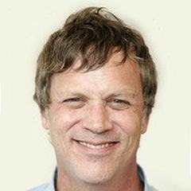

1961'de Los Angeles'ta doğan Todd Haynes, Brown University'de göstergebilim okudu ve Sundance'te Büyük Jüri Ödülü'nü kazanan Poison (1991) ile Yeni Queer Sinema'nın kilit isimlerinden biri oldu. Filmleri kimliği, arzuyu ve toplumun dışlanmışa nasıl davrandığını keşfetmek için tür ve biçimle oynar. Safe (1995) hastalık ve çevre üzerine bir incelemedir; Far from Heaven (2002) ise Douglas Sirk melodramlarını 1950'lerin Connecticut'ında yeniden hayal eder. I'm Not There (2007), altı oyuncuyu Bob Dylan'ın farklı versiyonları olarak seçer; Carol (2015) ise Patricia Highsmith'in aşk hikâyesini uyarlar.
Filmografi
- Poison (1991)
- Safe (1995)
- Velvet Goldmine (1998)
- Far from Heaven (2002)
- I'm Not There (2007)
- Carol (2015)
- Dark Waters (2019)
- May December (2023)